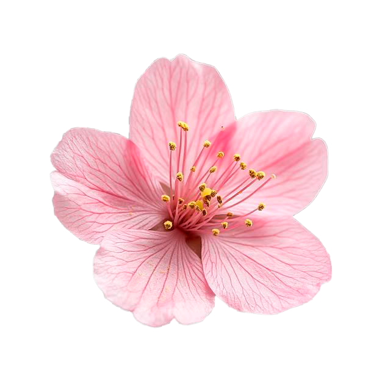

Trabajos seleccionados
Mi primer acercamiento al área de interacción fue a través del curso Imagen Escrita, que cursé durante el segundo semestre de 2025.
Durante el curso desarrollé dos proyectos. El primero consistió en la creación de un sitio web que reunía las tareas realizadas durante el semestre y mis datos de contacto.
Como proyecto final, trabajé en pareja en una propuesta que buscaba generar una interacción con las personas. En nuestro caso, desarrollamos una experiencia que utilizaba la cámara para generar una imagen a partir de las luces y profundidades captadas.
El proyecto estuvo inspirado en la técnica del hilorama, en la que se crean figuras mediante hilos tensados sobre una superficie.